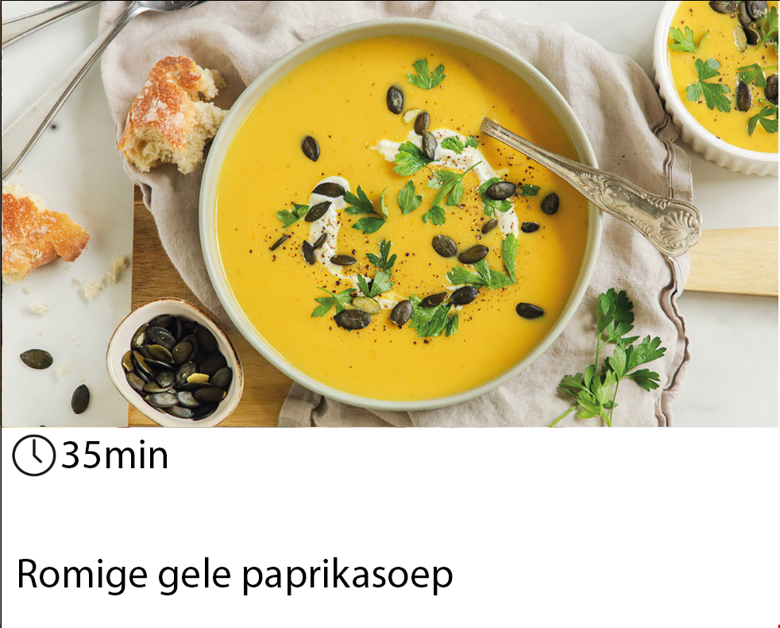
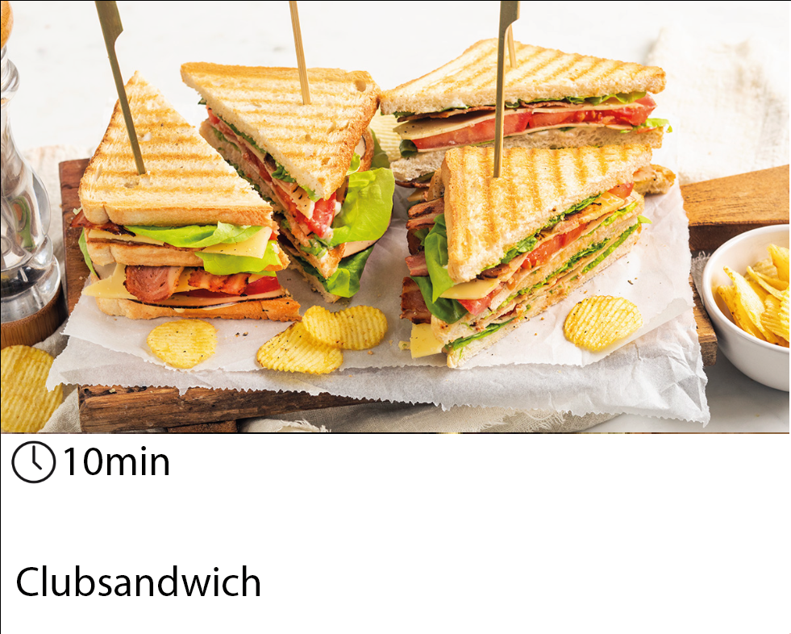
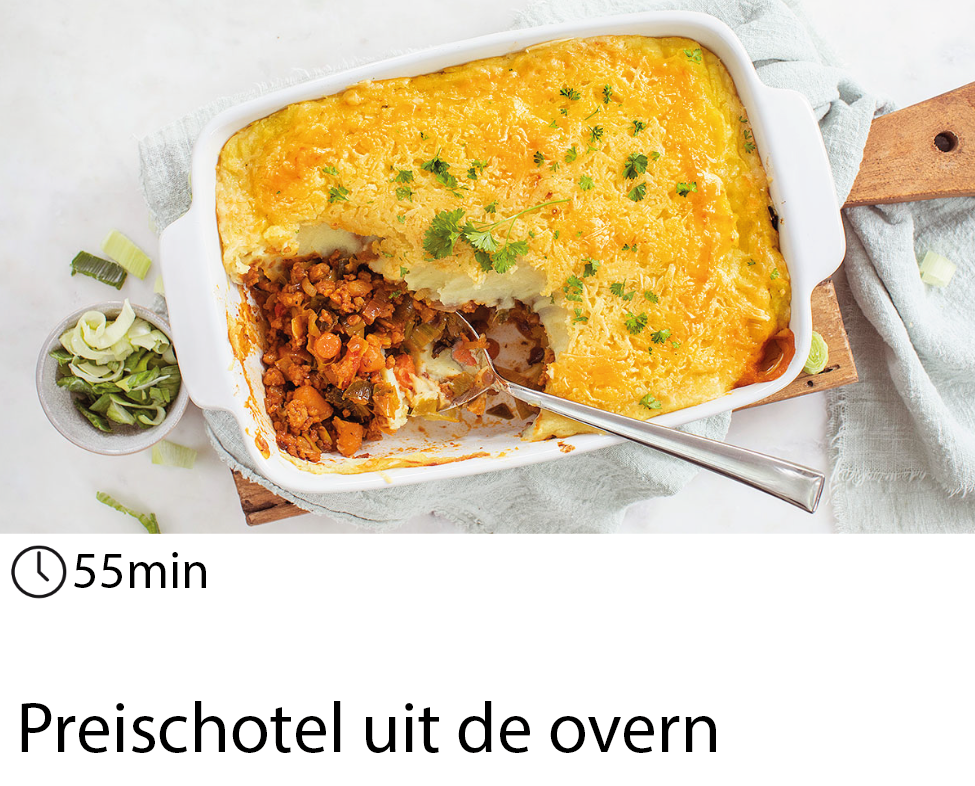
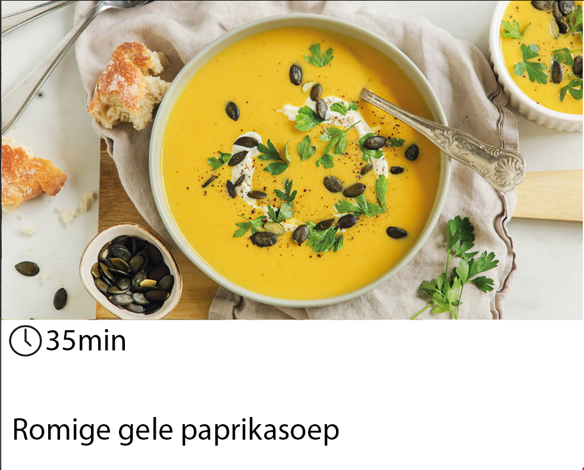
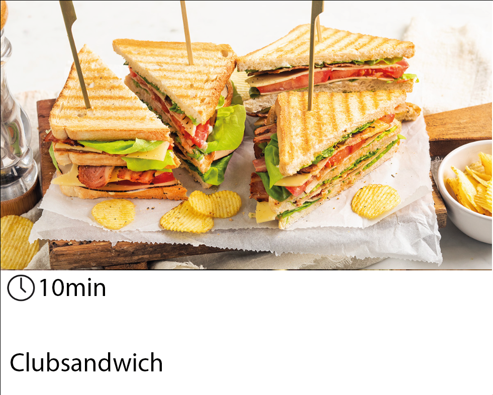
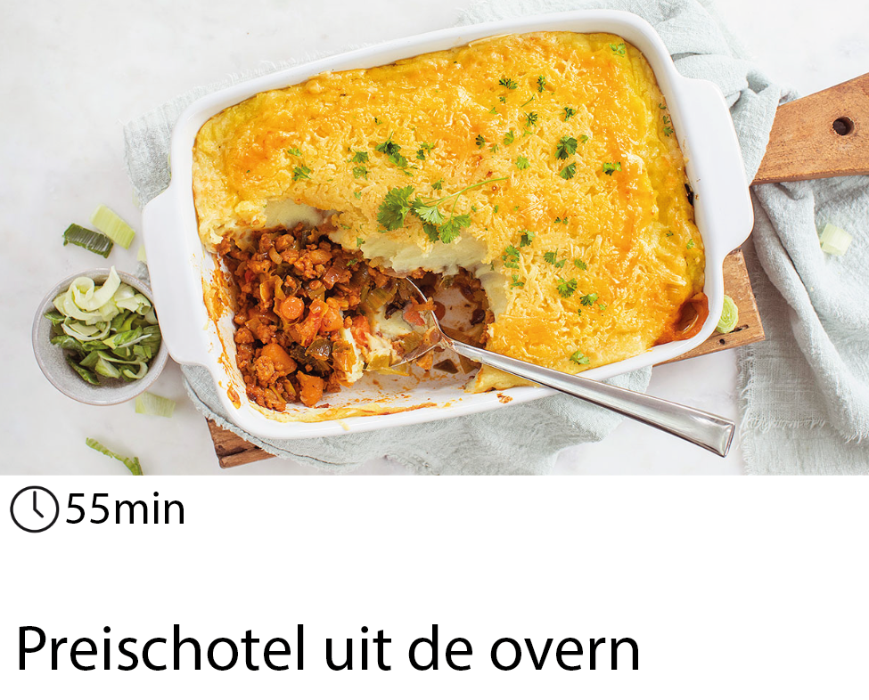

De lekkerste recepten op het wijde web
Hoofdmenu -> Favorieten
Favorieten
Hier staan bewaarden recepten die jij als favoriet hebt gemarkeerd
 





Bronvermelding:
- Saffraanrijst: https://zekergezond.be/detail/5b8cf094-13c0-40e0-a233-d159f9a9a46a/saffraanrijst-met-rozijnen,-ei-en-broccoli
- Wok met rundereepjes, witloof, zwammen en risoni: https://www.libelle-lekker.be/bekijk-recept/15373/wok-met-runderreepjes
- Hamburger met frietjes: https://www.hellofresh.nl/recipes/zelfgemaakte-hamburger-met-friet-60522aecadd74d050411d0c6
- Vegan pannenkoeken: https://www.leukerecepten.nl/recepten/vegan-hollandse-pannenkoeken-met-appel/
- Gele paprikasoep: https://www.leukerecepten.nl/recepten/romige-gele-paprikasoep/
- Club sanwich: https://www.leukerecepten.nl/recepten/club-sandwich/
- Preischotel: https://www.leukerecepten.nl/recepten/preischotel-uit-de-oven/